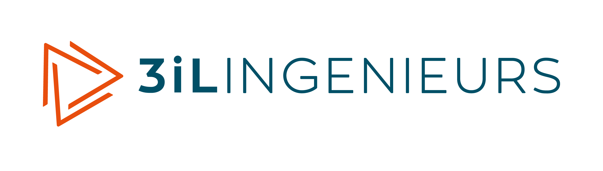
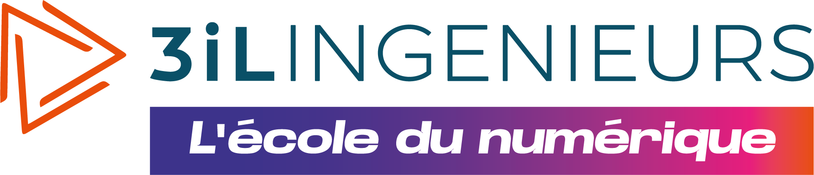

Clair
Une hiérarchie franche et des contenus faciles à parcourir.

Bibliothèque numérique 3iL
Les styles et composants 3iL pour créer vos sites et supports pédagogiques HTML. Consultez les exemples, testez leurs interactions et réutilisez leur code dans vos projets.
Pour intégrer un exemple, reprenez son HTML, les styles correspondants dans styles.css et, si nécessaire, son JavaScript. Conservez les polices et logos utilisés depuis assets/. Le HTML seul ne suffit pas.
Les contenus de cours, dates et états présentés sont des exemples, pas des services actifs. Les formulaires n’envoient aucune donnée et les exercices ne conservent pas votre progression.

Une base uniqueWeb · Supports pédagogiques · Applications
Principes de conception
Ces principes guident le choix des composants et leur adaptation à vos contenus.
Une hiérarchie franche et des contenus faciles à parcourir.
Préserver la navigation clavier, les noms accessibles et la structure HTML lors de chaque adaptation.
Assembler des composants documentés avec leurs styles et comportements associés.
Faire évoluer les composants à partir des besoins réels, en documentant et en testant les changements.
Fondations · Couleurs
Cette palette fournit les couleurs de référence. Pour les appliquer à un composant, utilisez les variables CSS correspondant à son rôle : texte, fond, bordure ou état. Vérifiez le contraste dans les deux thèmes.
Cliquez sur une couleur pour copier sa valeur.
Fondations · Typographie
La fonte de marque est embarquée pour rester disponible hors connexion. Bebas Neue Pro est réservée aux campagnes disposant de sa licence.
L’AVENIR
SE CODE ICI
2.4rem · hors adaptation mobile1rem · interligne 1.75Une hiérarchie de titres et des paragraphes courts facilitent la lecture d’un support de cours.
Ces exemples montrent des styles visuels, pas une hiérarchie de titres à copier telle quelle. Choisissez les niveaux h1 à h6 selon la structure de votre document, sans sauter un niveau pour obtenir une taille particulière.
Fondations · Typographie · Liens
Un lien conduit à une ressource ; un bouton déclenche une action. Le soulignement rend les liens reconnaissables sans dépendre uniquement de leur couleur.
Pour organiser votre support, consultez les blocs pédagogiques et les grilles de mise en page.
Corrigé du chapitre — indisponible dans cet exemple
Survolez les liens ou utilisez Tab pour voir leurs états. Une ressource indisponible reste du texte sans faux lien ni href="#". Adaptez les destinations, annoncez les nouveaux onglets et fournissez le fichier de téléchargement avec votre site. Selon le navigateur, un fichier local peut s’ouvrir au lieu d’être téléchargé. Aucun JavaScript propre au composant n’est nécessaire.
Fondations · Espacements
48121624324864Structure · Conteneurs
Un conteneur centre le contenu, limite sa largeur et conserve des marges intérieures. Il ne fixe jamais la hauteur. Les limites ci-dessous restent plafonnées à la largeur disponible.
Lecture : 48 rem maximum pour les cours et articles. Page : 80 rem pour les interfaces. Fluide : toute la largeur du parent. Sur un écran étroit, ces variantes peuvent donc avoir la même largeur.
Utilisez --ds-container-max et --ds-gutter pour un besoin particulier, sans modifier la largeur de toutes les pages.
Structure · Grilles
Les grilles s’adaptent à leur espace disponible, y compris lorsque la barre latérale est déployée. Le conteneur ds-layout définit cet espace de référence. L’ordre de lecture reste celui du HTML.
Pour comparer deux contenus de même importance. Une colonne sous 28 rem de largeur disponible.
Pour les ressources ou les cartes. Trois colonnes au-delà de 40 rem, deux entre 28 et 40 rem, puis une seule.
Pour des contenus courts : quatre colonnes au-delà de 40 rem, deux entre 28 et 40 rem, puis une seule. Évitez les longs paragraphes dans cette variante.
Le nombre de colonnes dépend de la place disponible. La largeur minimale souhaitée se règle avec --ds-grid-min ; elle ne provoque pas de débordement sur mobile.
Une répartition 2/3–1/3 pour un cours et ses ressources. Sous 40 rem, le panneau passe sous le contenu, sans changer l’ordre du document.
ds-stack empile les éléments. ds-cluster les aligne et revient à la ligne si nécessaire. Toutes les dispositions utilisent --ds-gap, réglable localement.
Les surfaces colorées layout-sample servent uniquement à rendre la disposition visible dans cette documentation. Remplacez-les par vos propres composants. Les styles de structure se trouvent dans styles.css.
Structure · Hero institutionnel
Un contexte, un titre et une action principale. Le hero introduit une page sans repousser inutilement son contenu. Ces deux variantes fonctionnent sans JavaScript.
Une composition en deux zones : le message et une signature de marque. Les zones s’empilent quand la largeur disponible diminue. Les textes ci-dessous illustrent une mise en page ; adaptez-les à votre formation et faites valider vos messages institutionnels.
3iL · Programmes Experts
Des connaissances aux projets, développez vos compétences et donnez une nouvelle dimension à votre parcours.
Comprendre.
Expérimenter.
Progresser.
Sans signature latérale, pour introduire une ressource ou un support pédagogique. Les informations de contexte restent une liste, pas une série de boutons.
Ressource pédagogique · Exemple
Structurez vos contenus et facilitez la navigation pour rendre vos supports plus simples à utiliser.
Les titres des exemples sont des h3 pour respecter cette page. Sur une page d’accueil, utilisez un h1 avec la même classe. Adaptez les textes et destinations des liens. La signature conserve un fond bleu et le logo blanc dans les deux thèmes. Copiez les styles ds-institutional-hero, les boutons, ds-cluster, les jetons et le logo ; aucun script de changement de logo n’est requis.
Contenu · Listes structurées
Utilisez des puces lorsque l’ordre est libre, des numéros lorsque la séquence compte, et une liste de définitions pour associer des termes à leurs explications. Aucun JavaScript n’est nécessaire.
Conservez une hiérarchie courte. Une sous-liste appartient toujours à un élément li, jamais directement à la liste parente.
Les numéros sont natifs : l’attribut start permet de poursuivre une séquence sans saisir les numéros dans le texte.
Pour une courte liste de prérequis ou de métadonnées, sans sacrifier la lisibilité.
Pour des éléments éditoriaux plus riches. Les puces restent présentes pour identifier clairement la liste.
Identifier les notions et les objectifs du chapitre.
Mettre les connaissances en pratique dans un exercice.
Consulter les ressources complémentaires.
Les éléments dt et dd associent chaque terme à sa définition. La disposition passe automatiquement sur une colonne lorsque la place manque.
Une séquence de travail, et non une chronologie datée. Les titres et descriptions restent dans l’ordre de lecture du document.
Définissez le problème et les contraintes.
Réutilisez les composants adaptés au contexte.
Contrôlez le fonctionnement, la lisibilité et l’accessibilité.
Les cases natives se cochent à la souris ou avec la touche Espace après Tab. Le texte barré complète l’état coché, sans remplacer son annonce accessible. Les choix de cette démonstration ne sont pas enregistrés par l’application.
Contenu · Timelines
Une chronologie présente des événements dans le temps. Un parcours présente des étapes et leur état. Dans les deux cas, l’ordre du HTML reste l’ordre de lecture.
Pour un calendrier pédagogique ou l’historique d’un projet. Les dates utilisent time et un attribut datetime exploitable par les outils.
Présentation des objectifs et des ressources disponibles.
Atelier accompagné et échanges autour des premières réalisations.
Restitution du travail et retour pédagogique.
Une présentation informative, pas un menu : les étapes ne sont pas cliquables. Les libellés « Terminé », « En cours » et « À venir » complètent la couleur. Une seule étape porte aria-current="step".
Consulter les notions essentielles.
Réaliser les exercices du chapitre.
Faire le point sur les acquis.
Contenu · Tableaux
Réservez les tableaux aux données reliées par des lignes et des colonnes. Chaque exemple possède une légende et des en-têtes explicites. Les styles ne fournissent ni tri ni filtrage.
Si le tableau dépasse la largeur disponible, faites-le défiler horizontalement. Au clavier, placez le focus sur le cadre puis utilisez les flèches.
| Module | Format | Durée |
|---|---|---|
| Fondations HTML | Cours et exercices | 2 h |
| Mise en page CSS | Atelier | 3 h |
| Interactions JavaScript | Projet accompagné | 4 h |
Utilisez des réponses textuelles plutôt que des symboles seuls. Le défilement horizontal préserve les relations entre les critères et les formats.
| Critère | Cours HTML local | Document PDF | Atelier présentiel |
|---|---|---|---|
| Consultation hors ligne | Oui, fichiers embarqués | Oui, après téléchargement | Selon les supports |
| Exercices interactifs | Possibles | Limités selon le document | Accompagnés |
| Échanges en direct | Non intégrés | Non intégrés | Oui |
Lors de la réutilisation, rendez les identifiants de légende uniques et conservez une cible existante pour chaque attribut ARIA. Vous pouvez omettre aria-describedby si vous ne reprenez pas le texte d’aide.
Contenu · Métadonnées
Un badge indique une catégorie ou un état court. Son texte doit rester compréhensible sans la couleur. Il ne remplace ni un bouton ni un message d’erreur détaillé.
Contenu · Cartes
Regroupez un titre, une courte description et un lien vers une même ressource. Ces cartes conduisent à des sections de ce catalogue.
Présenter les objectifs, définir une notion, rappeler une méthode et vérifier la compréhension.
Les repères communs pour choisir et adapter les composants à vos supports.
Formulaires · 01 — Anatomie
Un libellé visible, un contrôle et une aide si nécessaire. Commencez par ces briques, puis consultez leurs états et leur assemblage dans le formulaire complet.
Le placeholder donne un exemple, jamais un libellé de remplacement. Les listes de choix, zones de texte et groupes radio sont présentés dans le formulaire complet.
Formulaires · 02 — États
Distinguez une saisie à corriger d’un contrôle non modifiable. Le message explique toujours l’état, sans dépendre uniquement de la couleur.
Le code étudiant est volontairement invalide. Saisissez huit caractères alphanumériques pour voir le passage à l’état valide.
La lecture seule conserve la sélection et le focus. Un contrôle désactivé est exclu de la soumission.
Formulaires · 03 — Assemblage
Retrouvez les champs dans un parcours cohérent : saisie, choix, validation et réinitialisation. Les erreurs apparaissent après la sortie d’un champ ou une tentative de validation, puis disparaissent à la correction.
Démonstration uniquement : aucune donnée n’est transmise ou enregistrée.
Copiez les styles des champs, groupes, boutons et le JavaScript ci-dessous. Conservez des identifiants uniques. Cet exemple vérifie la saisie, mais ne crée aucune ressource. Dans une application réelle, ajoutez le traitement de l’envoi et la validation côté serveur.
Actions
Mettez en avant une seule action principale par zone. Réservez les variantes secondaire et discrète aux autres actions. Ces boutons illustrent les styles et ne déclenchent aucun traitement.
Interactions · Contenu dépliable
Masquez les compléments, pas les informations indispensables. Chaque panneau s’ouvre et se ferme indépendamment, au clic ou avec Entrée et Espace.
Pour des contenus secondaires indépendants, lorsque l’utilisateur choisit ce qu’il veut approfondir.
Non. Une hiérarchie plus simple ou une page dédiée sera presque toujours plus claire.
Interactions · Onglets
Pour des contenus associés, pas pour la navigation entre des pages. Les flèches gauche/droite activent les onglets ; Début et Fin atteignent le premier et le dernier. Tab conduit au panneau actif. Cette activation immédiate convient à des contenus déjà chargés.
Retrouvez les objectifs, les notions essentielles et les exemples du module.
Commencez par identifier les contraintes, puis proposez une solution argumentée.
Consultez les composants de référence pour préparer vos supports.
Voir les listes structuréesLes identifiants des onglets et panneaux doivent être uniques. Copiez également le JavaScript ci-dessous, puis initialisez le composant après le chargement du HTML.
Interactions · Modales
Réservez la modale à une information ou une tâche courte. Le dialogue natif isole le contenu du reste de la page et contient la navigation clavier. Échap et les boutons ferment la fenêtre, puis le focus revient au déclencheur. Le fond ne ferme pas la modale pour éviter les fermetures accidentelles.
Une information importante à acquitter. Pour un retour non bloquant, préférez une alerte dans la page ou un toast.
Demandez une décision explicite avant une action engageante. L’annulation reçoit le focus par défaut.
Aucune décision pour le moment.
Affichez une image avec sa description et sa légende, sans quitter la page.
Consultez un extrait de ressource avant de la télécharger. Cet aperçu HTML reste disponible hors ligne.
Utilisez showModal(), pas l’ajout manuel de open. Gardez un titre accessible, un bouton de fermeture visible et un identifiant unique. Ces exemples ne déclenchent aucune action métier. La confirmation expose sa décision dans dialog.returnValue : seule la valeur confirm vaut accord ; Échap annule.
Retour système
Affichez le message près du contenu concerné. Une information apporte un contexte, un succès confirme un résultat et un avertissement signale un point à vérifier. Les trois messages ci-dessous sont des exemples statiques.
Les fichiers de cet exemple peuvent être consultés hors ligne.
Votre fichier a été reçu. Dans cette démonstration, aucun fichier n’a été envoyé.
Vérifiez que votre document ne contient aucune information confidentielle.
Interactions · Notifications toast
Un retour non bloquant, annoncé sans déplacer le focus. Ces exemples restent visibles jusqu’à leur fermeture : aucune limite de lecture. Une nouvelle notification remplace la précédente. Pour une erreur bloquante, préférez une modale, ou un message dans le formulaire.
Interactions · Infobulles
Aide courte et non essentielle, sans lien ni bouton à l’intérieur. L’infobulle apparaît au survol ou au focus, reste survolable et se ferme avec Échap. Sur écran tactile, toucher le bouton affiche l’aide.
Interactions · Popovers
Contrairement à l’infobulle, ce panneau peut contenir des actions. Il s’ouvre au clic et place le focus sur son premier contrôle, sans le piéger. Échap, le bouton Fermer, un clic extérieur ou la sortie du focus ferment le panneau.
Retrouvez les composants utiles pour structurer un chapitre.
Les panneaux se repositionnent dans la fenêtre au défilement et au redimensionnement. Conservez des identifiants uniques et les relations ARIA. Ces exemples sont destinés à la page, pas à l’intérieur d’une modale native.
Composants métier
Annoncez les objectifs, définissez une notion, donnez un conseil et proposez une question de compréhension. Ces quatre exemples illustrent un extrait de cours ; ils ne constituent pas un chapitre complet. Le quiz fournit un retour immédiat, sans enregistrer de note.
Toute information se rapportant à une personne physique identifiée ou identifiable.
Si une donnée n’est pas nécessaire, ne la demandez pas.
Pédagogie · Blocs de code
Des extraits en texte brut, sélectionnables et jamais exécutés. Tous les langages peuvent être présentés sans configuration : seuls le contenu et la légende changent.
<button class="button button-primary" type="button">
Commencer le chapitre
</button>/* Personnaliser un groupe */
.actions {
display: flex;
gap: 16px;
flex-wrap: wrap;
}const message = "Prenez le temps de lire les consignes, puis avancez à votre rythme dans les activités proposées.";
function accueillir(nom) {
return "Bienvenue " + nom;
}Par défaut, les lignes longues défilent horizontalement au clavier. Ajoutez ds-code--wrap pour les replier et data-line-numbers pour les numéroter. La copie conserve le texte original, sans numéros. Échappez les caractères HTML dans le fichier source et conservez des identifiants de légende uniques. Sans JavaScript, le code reste lisible et sélectionnable.